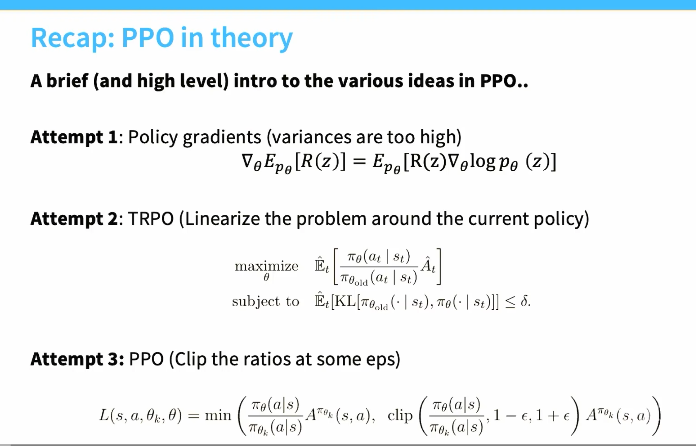
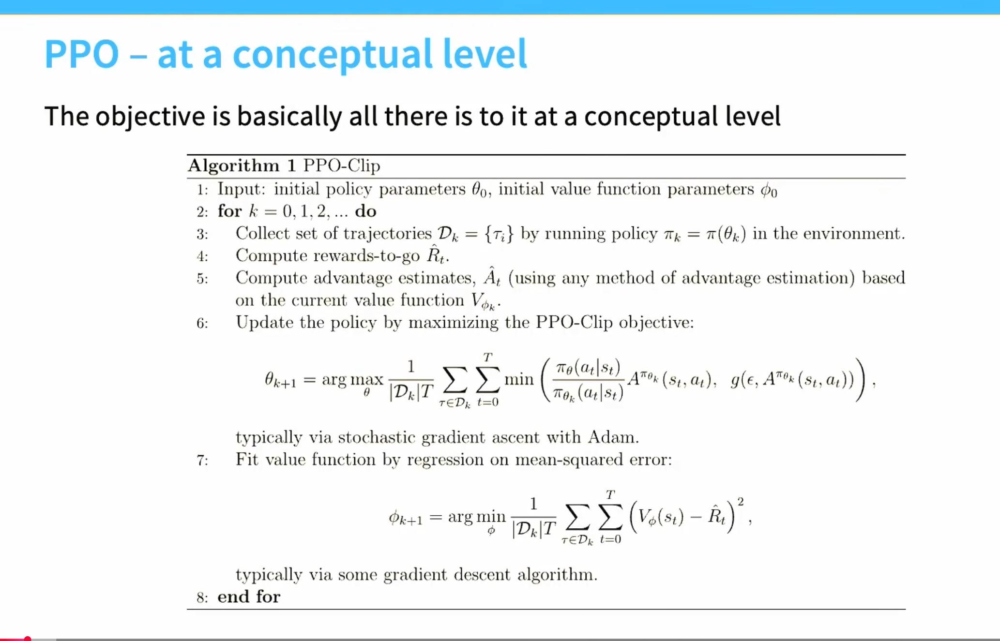
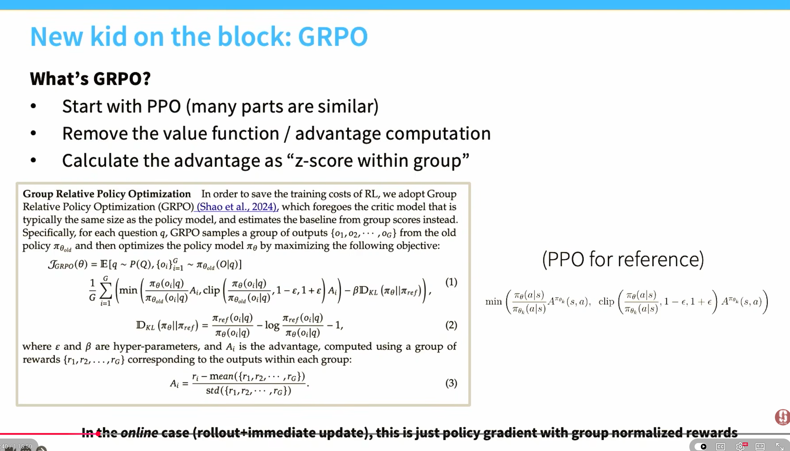
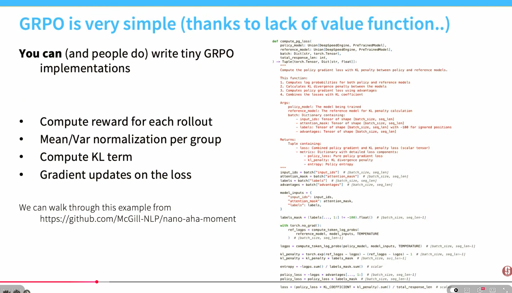
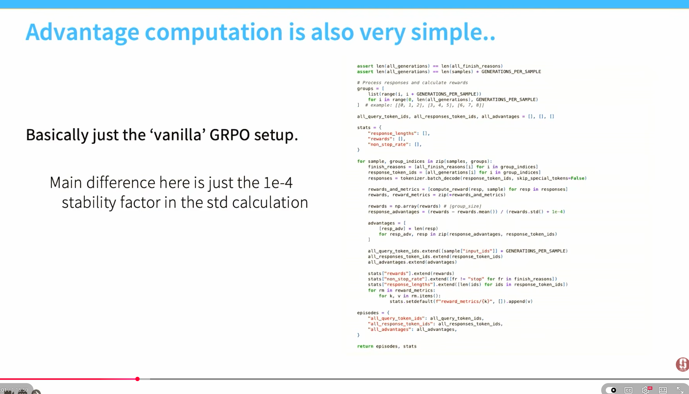

From PPO
to GRPO.
One small step at a time. Build the maths intuition, play with the objectives, and connect five slides to practical LLM training.
A policy is just a recipe
for choosing actions.
An agent sees a state, picks an action, and gets a reward. Its policy gives each possible action a probability. Training changes those probabilities.
right always gives 8, left gives 2.
How likely is this action?
πθ(right | junction) means “the probability of turning right when we are at the junction.” The vertical bar means given. The subscript θ (theta) means the model weights that set this probability.
Move the slider. Both probabilities must add up to 1. A 60% policy still sometimes turns left.
What reward should we expect?
Multiply each outcome by its probability, then add. Expected reward is a weighted average, not necessarily the reward you get on one try.
A hat, as in Ê, means we estimate this average from a finite batch of samples.
A gradient points toward improvement.
A derivative measures how much a result changes when you nudge one input. Here, E[R] = 2 + 6p, so its derivative with respect to p is 6: increase p by 0.01 and expected reward rises by 0.06.
For many model weights, the collection of derivatives is the gradient, ∇θ. Gradient ascent takes a small step in that direction.
Why does the slide use log probability?
The natural logarithm makes probability products easier to differentiate. The key identity is ∇p = p ∇log p for p > 0. It lets us estimate reward gradients using samples. Increasing log probability also increases probability, because log is increasing.
For a Bernoulli action with p = sigmoid(θ), ∂log π(right)/∂θ = 1 − p and ∂log π(left)/∂θ = −p. These are derivatives with respect to θ, not p.
Reward needs a reference point.
The value function V(s) estimates the return we usually expect from a state. The action value Q(s,a) estimates return after a particular action.
In this one-step world, Q(right) = 8 and Q(left) = 2.
Positive advantage: make the action more likely.
Negative advantage: make it less likely.
per visit to the junction5.60
A pocket dictionary for both slides θ, φ, π, τ, Ê, Σ…
θ / φ
Policy weights / value-function weights.
st, at
State and action at timestep t.
z or τ (tau)
A sampled output or trajectory: a sequence of states, actions, rewards.
R, R̂t
Return; an estimated return from time t onward. Individual rewards are usually written rt.
Ê, Σ, 1/N
Sample average; add things up; divide by how many there are.
arg max / arg min
The parameter values that make a score largest / a loss smallest. Training approximates this.
k / t
Outer training iteration / timestep within a trajectory.
ε (epsilon) / δ (delta)
PPO clipping amount / TRPO policy-change budget.
Reward the actions
that worked.
Policy gradients change model weights so successful sampled behavior becomes more likely. They work, but an individual gradient estimate can be very noisy.
Left: how to increase average return. Right: sample behavior, multiply its log-probability gradient by its return, then average. We do not need to differentiate through the environment.
Both actions are good.
One is a little better.
A fair-coin policy chooses action A or B. A returns 10; B returns 9. The correct average gradient for its logit θ is only +0.25.
Without a baseline, each sample contributes +5 or −4.5. Those large, opposing estimates are noisy. Subtracting the expected return, 9.5, makes both contributions +0.25 in this special example.
Show the arithmetic
At p(A) = 0.5, the log-probability derivatives are +0.5 for A and −0.5 for B.
No baseline: 10 × 0.5 = +5; 9 × (−0.5) = −4.5. Their equally weighted mean is +0.25.
With baseline: (10 − 9.5) × 0.5 = +0.25; (9 − 9.5) × (−0.5) = +0.25. A state-dependent baseline preserves the expected gradient and can reduce variance. This exact zero-variance result is specific to this toy example.
Two different problems. Baselines and advantage estimates address noisy gradients. TRPO and PPO address overly large policy changes. PPO still uses policy gradients; it changes the objective we optimize.
Improve, with a
change budget.
Trust Region Policy Optimization tries to increase a reward-related score while keeping the new policy close to the policy that collected the data.
The ratio compares the same action.
r = 1 means unchanged. r = 1.2 means that action is 20% more likely. KL divergence measures change across the whole action distribution; zero means identical. It is directional and is not a distance in the usual symmetric sense.
What does “linearize” on the slide mean?
Practical TRPO locally approximates the objective with a linear function and the KL constraint with a quadratic function, then uses a line search. This needs more machinery than a usual gradient step. The sampled average KL constraint is not a guarantee about every state.
Old policy: A 50%, B 50%.
Estimated advantages: A +1, B −1.
Try 55%, then 60%, with δ = 0.01. The larger score can exceed the change budget. This demo checks a proposed update; it does not run TRPO’s optimizer.
Stop paying for
too much change.
Proximal Policy Optimization uses a simpler trick: cap the incentive for pushing an action’s probability too far in the direction its advantage suggests.
The sign matters.
For A > 0, the score stops increasing above r = 1 + ε. For A < 0, it stops improving below r = 1 − ε. Changes in the harmful direction still lower the score.
Clipping is an incentive, not a fence.
Probabilities can still move outside the band. PPO-Clip does not enforce a hard KL limit or guarantee every update improves reward. Some implementations add KL-based early stopping.
How this becomes code and what stays fixed
# Batch data from the old policy; treat these as constants.
ratio = exp(new_log_prob - old_log_prob)
unclipped = ratio * advantage
clipped = clamp(ratio, 1 - epsilon, 1 + epsilon) * advantage
policy_loss = -mean(minimum(unclipped, clipped))
# Minimize the negative score with gradient descent.Keep the old log probabilities and advantage estimates fixed while taking several minibatch optimization passes. Recompute the new log probabilities as θ changes. Next iteration, collect fresh experience. This is probability-ratio clipping; gradient clipping and clipping actions are different operations.
Turn the objective
into a training loop.
The policy chooses actions. The value function predicts returns. Follow one tiny batch through the algorithm and see how their jobs fit together.
Replace the critic
with a comparison.
Generate several answers to the same question. Score them, then compare each answer with its group. The PPO-style update stays; the learned value function goes.
What does it take
to implement this?
Start with a tiny task whose answers you can check automatically. Learn the training pipeline before scaling the model, response length, or GPU budget.
Can you predict
the next step?
A few quick checks. Pick an answer to see the reasoning.
Use advantage to decide which way to change.
Use the clipped objective to temper how far you push.
Your slides, with the missing context.
This lesson unpacks your five supplied slides. The tiny worlds and calculators are teaching examples, not a full reinforcement-learning implementation.
View the original slides




